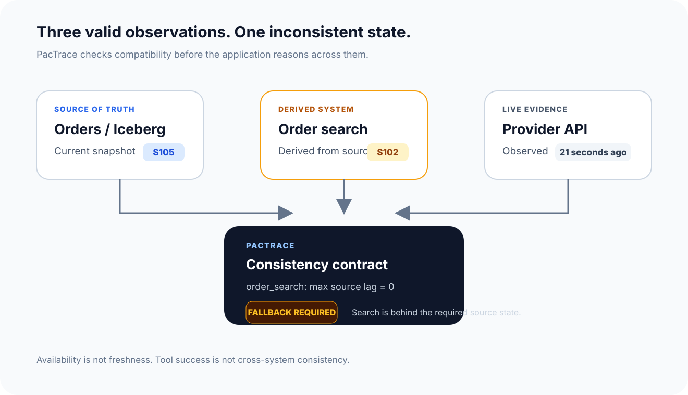
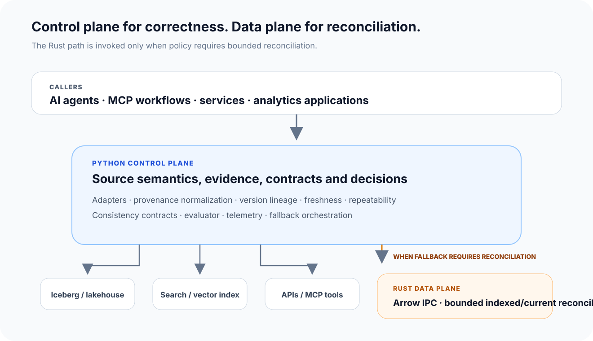
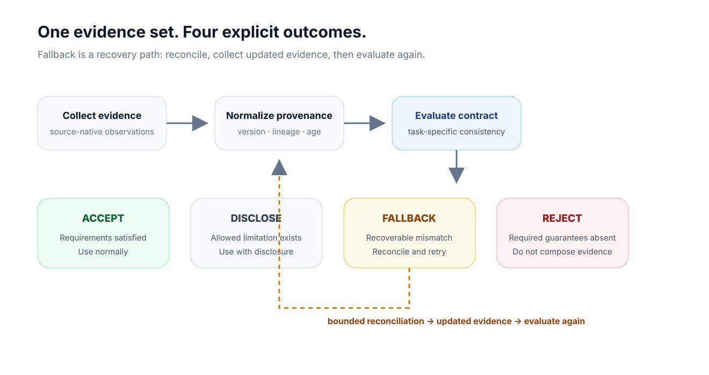
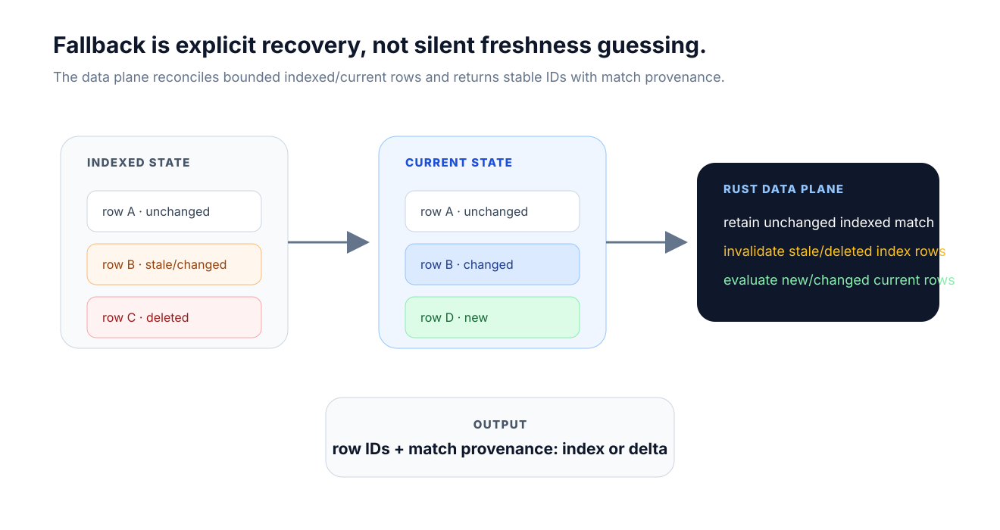

Preserve what the source can actually prove.
Version, lineage, derivation, observation time, freshness, repeatability and known uncertainty remain first-class evidence semantics.
Runtime evidence consistency
PacTrace verifies provenance, version lineage, freshness and repeatability before an AI agent or distributed application combines evidence from independently refreshed systems.
Correct facts can still produce the wrong answer when they describe different versions of reality.

The problem
A database query can be correct. Search can be healthy. An API response can be current enough for one workflow. That still does not prove the observations describe compatible source states.
The solution
PacTrace makes source guarantees explicit, lets each workflow define the consistency it requires, and evaluates compatibility before heterogeneous evidence becomes part of a decision.
Version, lineage, derivation, observation time, freshness, repeatability and known uncertainty remain first-class evidence semantics.
An incident workflow can demand zero source lag while an exploratory analytics task may allow bounded staleness.
The contract is evaluated before evidence becomes part of an automated conclusion.
Uncertainty is surfaced as a runtime decision rather than converted into implied certainty.
A concrete contract
{
"schema_version": "pactrace.contract/v1",
"name": "incident-investigation",
"requirements": [
{"resource": "incidents", "require_repeatable": true},
{"resource": "incident_search", "max_source_lag": 0},
{"resource": "provider_status", "max_age_seconds": 30}
]
}Production use cases
The same runtime problem appears wherever applications combine structured, indexed and live evidence from systems that refresh independently.
An incident agent reads current lakehouse events, searches historical incidents and checks a provider API. PacTrace verifies that the search derivation is compatible with the source state required by the workflow.
Outcome: use current search normally or route known drift to bounded reconciliation.
Keyword, vector and hybrid retrieval systems are derived state. PacTrace records which source version produced them and compares that derivation with independently observed current state.
Outcome: avoid presenting a stale retrieval result as current simply because the index is available.
A decision may combine current transactions, materialized features, device intelligence and live third-party signals with different update guarantees.
Outcome: apply stronger consistency requirements to high-risk decisions than to exploratory analysis.
An MCP tool may expose a Git commit, a table snapshot, an observation timestamp or no reliable version semantics at all.
Outcome: reason over source-native guarantees rather than pretending every tool participates in one transaction.
Architecture
The Python control plane owns source semantics, evidence normalization, contracts, adapters and decisions. The Rust data plane is invoked only for bounded reconciliation and communicates through Arrow IPC.

Decision model
PacTrace does not subtract opaque version identifiers or invent ordering between unrelated systems. Source-native semantics are preserved, and missing provenance remains an explicit limitation.

Bounded reconciliation
When policy allows recovery, PacTrace can compare bounded indexed/current rows in the Rust data plane. Source adapters remain responsible for obtaining those bounded changes efficiently.

Core capabilities
Capture source identity, version, derivation, observation time and repeatability.
Iceberg ancestry stays Iceberg ancestry. Timestamps stay timestamps. Opaque versions are not treated as counters.
Different workflows can require different freshness, lineage and repeatability guarantees.
Accept, disclose, fallback or reject instead of silently using uncertain evidence.
Recover from known derived-state drift without becoming another query or search engine.
What PacTrace is not
| Layer | Primary question | PacTrace relationship |
|---|---|---|
| Semantic layer | What does this metric or business concept mean? | Complementary. PacTrace checks whether the observations behind that meaning are coherent now. |
| Lineage catalog | Where did this data originate and what depends on it? | Complementary. PacTrace consumes provenance at runtime rather than replacing enterprise lineage. |
| Observability | Is the pipeline or service healthy? | Complementary. A healthy index can still represent an older source state. |
| Query/search engine | How do I execute or retrieve data? | PacTrace coordinates consistency around those systems instead of replacing them. |
| PacTrace | Can these independently observed facts be safely used together for this task? | Core responsibility. |
Implemented today
The project already includes the execution paths required to reproduce a real source/index consistency failure and exercise the Python-to-Rust reconciliation boundary.
Validation
Search is built from one Iceberg snapshot, the source advances, the index is deliberately left behind, and PacTrace independently evaluates the source/derivation mismatch before selecting recovery.
The stale index cannot retrieve the newly appended source row. The evaluator detects the known lineage gap.
The service validates the protocol, reconciles bounded current/indexed state and returns stable row IDs with provenance.
Roadmap
Open source infrastructure
PacTrace is looking for collaborators across Iceberg and analytical data systems, search, MCP/agent infrastructure, observability, Rust/Arrow systems, reliability and release engineering.